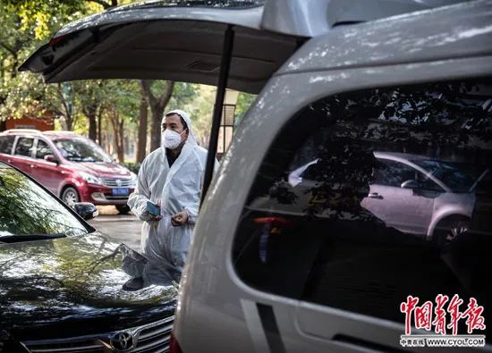

志愿接送医生的武汉司机：人可怜又渺小，我什么也做不了，只会开车
原文链接 备份链接 口述 黄晓民 采访 张瑾 联系到黄晓民时，已是 2 月 2 日晚上 8 点多，他刚协调完一批送给医院的物资回到家中。电话那头传来咳嗽声。 黄晓民，38 岁，南国地产的一名市场推广。1 月 23 日成立武汉 123 志愿 …
武汉的一群车队志愿者，被当地人称作“摆渡人”。粗略估计，这一群体已超过千人。这群志愿者中，最活跃的大部分是90后，最小的是1998年出生的，他们用自己的勇气和热情化解了部分人员暂时的出行难题。然而，在病毒面前，志愿者也不能幸免，有人感染甚至离世。但更多人相信，自己能坚持到最后，坚持到抗击疫情结束那一天。

2月9日，武汉百步亭社区，一位志愿者司机让一位自行来到发车点的轻症新冠肺炎患者上车后，等待同事告知他目的地。这位患者将被送到市内一处方舱医院接受隔离治疗。中青报·中青网记者 李峥苨/摄
中青报·中青网记者 胡宁 见习记者 朱彩云
2月3日下午，54岁的武汉志愿者何辉走了，病因是新冠肺炎。
从除夕到正月初五左右发病，这个40人大家庭的顶梁柱一直作为武汉志愿者车队的一员奔波在武汉街头，义务接送医护人员。
何辉的家人回忆，他在加入志愿者车队时曾说，“有一分力就出一分力”。
疫情突发，像何辉一样的车队志愿者，被当地人称作武汉“摆渡人”。粗略估计，目前武汉市这一群体的规模超过千人，他们用自己的勇气和热情化解了部分人员暂时的出行难题。可在病毒面前，志愿者也不能幸免，有人感染甚至离世。
这些事情必须有人做
田正波也是志愿者车队的一员，他每天往返医院三五趟，负责武汉市汉阳区洲头街怡畅园社区内有需要人群的出行。
虽然穿着防护服，戴着口罩驾驶，但田正波说，志愿者们还是尽可能避免送发热病人，因为要保证护送的医护人员、社区人员与司机的安全。
1月24日之后，田正波就没回过家，“只在中途回去拿了趟衣服，我让爱人把衣服放在电梯里。电梯门一开，我就看到5岁的女儿打着赤脚要跑过来。”当时的田正波正穿着防护服，赶紧喊她停下。
田正波说，在报名加入公司组建的志愿者车队时，他只想着，“自己是武汉人，要为武汉尽点微薄之力”，直到除夕正式通知上班才敢告诉家人。
在田正波对接的社区，社区工作人员正一一了解与核实几千户住户的症状与防护问题。“不跑车的时候我就帮忙打电话给住户，核实情况，有出现被感染居家隔离的患者，我就去相应的门栋贴告示。”田正波说。
田正波所在的志愿者车队已经奔波十余天，这支不同年龄层队员组成的队伍，经历了从最初的“人心惶惶”到现在的“不害怕”。用田正波的话来说，大家都在努力，接送、运输物资这样的事必须有人去做。
离家十余天，家人始终为他担着心。他说，做好防护和消毒，有信心，要坚持到最后，抗击疫情结束的那一天。
你会想马上接下一个任务
1月26日晚，一条朋友圈里帮助医院送物资的信息，让张超（化名）当即选择加入志愿者车队。家里人不赞成也没能阻止他。
这些天，他运过物资，也接送医护人员。“没有时间吃饭，看到前线医护人员需要很多帮助，会尽心尽力做。”在张超最早加入的几个微信群里，每天都几乎不间断发布接收和派发防护物资、接送医护人员的消息。
“有上瘾的感觉，你会想马上接下一个任务。”一次为了等物资，张超从晚上7点一直等到次日半夜一两点，“不是一辆车，是十几辆车都在等”。还有一次拉物资，一个志愿者因为一人运不了，向已休息了的张超求助，“那会儿已经半夜两点半了，是最晚的一次”。
“封城”后的武汉，路上飞驰的不少车辆都来自各个志愿者车队。张超加入车队后的第四天，他所在的3个志愿者群已有近1000人。
这群志愿者中，活跃的大部分都是90后，最小的是1998年出生的。
“刚开始不管是激情还是怎样，大家的干劲儿比较足。第三、四天接完医护人员，发现有些事情还是要优先考虑，比如做好自己的防护。”在张超看来，“安全防护做不好就是做坏事”。有一位志愿者家里有双胞胎小孩，“我知道后就找他谈，故意说得狠一些，告诉他要是他再来跑运输我就把他踢群”，后来这位志愿者改做后勤工作了。
面对疫情，更需要志愿者群体的冷静
实际上，对这些志愿者来说，防护物品一直缺乏，最早的时候，很多人只准备了口罩、平光镜和帽子，近期才有大部分司机穿上了防护服。张超觉得应该强化部分志愿者的安全意识，他把收集到的防护知识请医生修改后，发到群里，“但文字的东西，大家都不爱看。直到听说有志愿者感染后，很多人才真正重视起来”。
志愿者大象从很早便担忧志愿者群体的安全问题。他曾是2008年汶川地震民间救援队的成员，有专业救援经验。12年前，他曾在火车上碰到一对给中介交了4200元就为了去前线帮忙抬水的夫妇，大象发现他们没有任何专业救援知识。他担心这次武汉的疫情里也发生类似情况。
大象在接送医护人员外，主要给志愿者募集物资，直到现在，防护服和酒精都相当紧缺。在志愿服务初期，有的志愿者曾不以为然地跟大象讲：“我身体好得很。”
“现在有效调配不足，又缺乏日常的专业志愿服务培训，此时更需要志愿者群体的冷静。”大象观察到，目前物资紧缺的状况略有缓解，一部分志愿者车队在其他力量补充上来之后慢慢在退出。
江城勇士，洗刷了我的灵魂
最近几天，曾尧更多的时候是在武汉市第九医院的留观室里照看66岁的父亲。父亲1月中旬开始发烧，当时以为是流感，月底的两次核酸检测结果呈阴性。但目前情况并不乐观，曾尧正在不断地通过各种办法，寻找一间有呼吸机的病房。
他的志愿者生涯因疫情而起，也因此而终。
最初为找口罩，曾尧联系上了校友群里的一位校友付文杰。媒体报道付文杰时称他是卖房卖车捐300万物资的90后。从那时起，曾尧就跟着付文杰一起为武汉同济医院、武汉协和医院等配送急需的物资。
春节期间，父亲身体情况看似有好转，曾尧也被志愿者的行动感染，便正式加入付文杰的车队，归属于物资组。
在曾尧短暂的三四天志愿者生涯里，他都是早上九点前去医院给父亲送完饭就出发送餐、送物资给医院。“那时候武汉三镇到处跑，每天跑掉将近一箱油。”他亲眼看见，医护人员在物资极其紧张的情况下冲上一线，而身边志愿者四处奔走不计得失。
“这些对我冲击很大。”曾尧说，“江城的勇士们洗刷了我的灵魂”。
中国青年报·中青在线出品
微信编辑 | 陈轶男

觉得好看请点这里
原文链接 备份链接 口述 黄晓民 采访 张瑾 联系到黄晓民时，已是 2 月 2 日晚上 8 点多，他刚协调完一批送给医院的物资回到家中。电话那头传来咳嗽声。 黄晓民，38 岁，南国地产的一名市场推广。1 月 23 日成立武汉 123 志愿 …
原文链接 备份链接 凤凰新闻客户端 凤凰网在人间工作室出品 我叫范曹军，今年34岁，是湖北襄阳枣阳市人。我在武汉上学、工作十多年了，武汉是我的第二故乡。 去年12月，我就开始关注华南海鲜市场零散爆发出来的疫情消息。由于工作原因，我经常在武 …
原文链接 备份链接 数据来源：腾讯新冠肺炎疫情实时追踪 截至2月3日早上7时， 全国新冠肺炎确诊个案16615例， 武汉确诊个案5142例。 根据1月31日湖北省疫情新闻发布会， 截至30日24时， 武汉地区共有6万余名医务工作者参与救 …
原文链接 备份链接 ********** ***** “在瘟疫面前，感谢你让我们看到了人性中的美好和善良”，“你让我们看到了一个真实的武汉。”评论中出现最多的字眼就是“真实”。***** 武汉晚上七点，空旷的街道，时不时有120急救车疾驰 …
原文链接 备份链接 疫情爆发以来，武汉市公交、地铁系统相继停运，加之私家车禁行，这座一千万人口的巨型城市，在短时间内，迅速从喧嚣中沉寂下来。曾经繁华、拥堵的武汉街头，如今显得空荡而寂寥。 但仍有一群人活跃在武汉的路面上，他们穿上全身防护 …